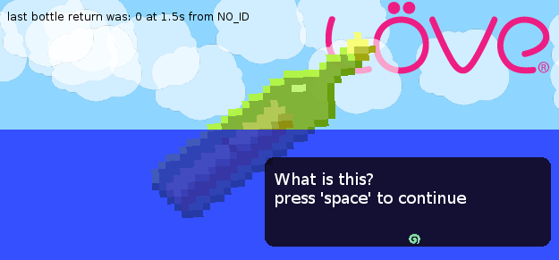

Message in a Bottle
Contents
About
This is a Message management library for LOVE 0.7.0. It aims to be unobtrusive and easy to use.

Download
Download the code or sample love from bitbucket.
This library requires MiddleClass. It is included.
Contact
See the forum post for public questions. Go to the Issue Tracker for bugs. Look around for TechnoCat if you have any further questions or concerns.
It would be cool if you told me if you use it in your project. I would love to see what this is used for.
Features
- StayBottle, bottles that stay until a button is pressed.
- TimedBottle, bottles that stay until a button is pressed or until a duration of time has passed.
- Ocean, a management object for Bottles
- Very (and hopefully easily) Configurable Bottles
- Sleek and Stylish Bottle defaults
Missing Features
Not implemented yet, but plan to.
- Boolean Bottles
- Choice Bottles
Configuring
Much of the configuration you are going to want to do will take place at the top of MessageInABottle.lua.
Usage
Setting up Ocean
require'MessageInABottle.lua' function love.load() ocean = Ocean:new() end function love.update(dt) ocean:update(dt) end function love.draw() ocean:draw() end
Example
require'MessageInABottle.lua' function love.load() love.graphics.setBackgroundColor(255,255,255) --Initialize the ocean to manage the bottles. --It is going to act as a bottle queue. ocean = Ocean:new() --Create a timed bottle and add it to the ocean ocean:addBottle(TimeBottle:new(nil,"...",nil)) --Create a stay bottle and add it to the ocean local bottle = StayBottle:new(nil,"What is this?") --Change some bottle settings to non-default ones bottle:setX(310) bottle:setVolume(0) ocean:addBottle(bottle) end function love.update(dt) --Required to update the bottles ocean:update(dt) end function love.draw() love.graphics.setColor(0,0,0) --This is showing some useful variables ocean stores. love.graphics.print( 'last bottle return was: '..ocean.response.. ' at '..(math.floor(ocean.responseTime*10)/10).. 's from '..ocean.responseID,12,12) --This is all that is needed to draw the current bottle ocean:draw() end function love.keypressed(k,u) --You can add a bottle on the fly. if k=="d" then local x = math.floor(math.random(400)) local y = math.floor(math.random(150)) ocean:addBottle(TimeBottle:new("PRESSED_D","Timed Box!")) elseif k=="escape" then love.event.push("q") end end
Constructors
Ocean
Ocean:new()
MessageBottle
Do not use this. It is the parent class of all Bottles.
MessageBottle:new(id, text)
-
string id - The unique identifier of the Bottle. e.g. "Open Door"
-
string text - The text to display on the Bottle. e.g. "Will you open the door?"
StayBottle
StayBottle:new(id, text)
-
string id - The unique identifier of the Bottle. e.g. "Open Door"
-
string text - The text to display on the Bottle. e.g. "Will you open the door?"
TimeBottle
TimeBottle:new(id, text, timeout)
-
string id - The unique identifier of the Bottle. e.g. "Open Door"
-
string text - The text to display on the Bottle. e.g. "Will you open the door?"
-
number timeout - The amount of time the bottle will display for.
Setter Functions
Timeout
TimeBottle:setTimeout(timeout)
-
number timeout - The time left for a TimeBottle
setX
MessageBottle:setX(x)
-
number x - The x position of the Bottle
setY
MessageBottle:setY(y)
-
number y - The y position of the Bottle
setPosition
MessageBottle:setPosition(x, y)
setWidth
MessageBottle:setWidth(width)
-
number width - The width of the Bottle
setHeight
MessageBottle:setHeight(height)
-
number height - The height of the Bottle
setButton
MessageBottle:setButton(button)
-
KeyConstant button - The button the Bottle will use.
setEase
MessageBottle:setEase(ease)
-
function ease - The ease function to use for easing-in.
setEaseTime
MessageBottle:setEaseTime(easeTime)
-
number easeTime - The time to spend easing-in.
setFade
MessageBottle:setFade(fade)
-
function fade - The fade function to use for fading-in.
setFadeTime
MessageBottle:setFadeTime(fadeTime)
-
number fadeTime - The time to spend fading-in.
setEnterCallback
MessageBottle:setEnterCallback(enterCB)
-
function enterCB - The callback function to call on opening a bottle.
setExitCallback
MessageBottle:setEnterCallback(exitCB)
-
function exitCB - The callback function to call on exiting a bottle. The return of the bottle is passed to the exitCallback.
setSound
MessageBottle:setSound(sound)
-
string sound - The location of a sound file.
setVolume
MessageBottle:setVolume(volume)
-
number volume - The volume of the sound. Normal volume is 1.0.
setIndicator
MessageBottle:setIndicator(indicator)
-
string indicator - The location of the indicator image file. The indicator is the icon that bounces up and down on certain bottles.
setFgColor
MessageBottle:setFgColor(r, g, b, a)
-
number r - The red value from 0-255.
-
number g - The green value from 0-255.
-
number b - The blue value from 0-255.
-
number a - The alpha value from 0-255.
setFont
MessageBottle:setFont(font, size)
setAlign
MessageBottle:setAlign(align)
-
AlignMode align - The align mode.
setBgColor
MessageBottle:setFgColor(r, g, b, a)
-
number r - The red value from 0-255.
-
number g - The green value from 0-255.
-
number b - The blue value from 0-255.
-
number a - The alpha value from 0-255.
setBgRadius
MessageBottle:setBgRadius(r)
-
number r - The radius of the corners.
setBgRadiusSegments
MessageBottle:setBgRadiusSegments(n)
-
number n - The number of segments to draw on each corner.
Category: